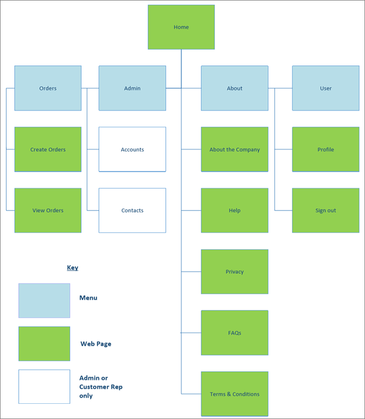
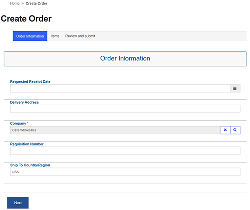
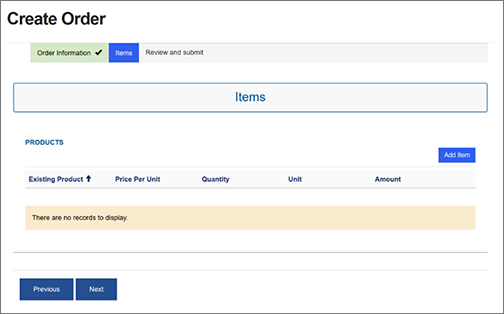
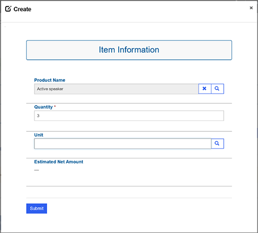
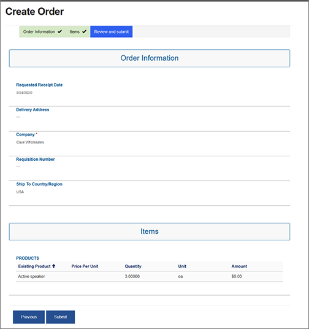
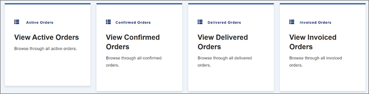
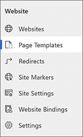
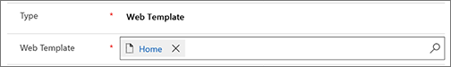

Das Debitorenportal anpassen und verwenden
[!include[rename-banner](~/includes/cc-data-platform-banner.md)]In diesem Thema werden die verschiedenen Seiten beschrieben, die im Kundenportal sofort verfügbar sind. Es wird erklärt, was die Seiten tun und wie Sie sie anpassen können.
Das Kundenportal bietet einige vordefinierte Websiten und Aktionen. Die folgende Sitemap bietet einen Überblick über diese Webseiten und Aktionen sowie die Rollen, die die Aktionen ausführen können.

Typische Anpassungen
Die folgenden Themen helfen Ihnen beim Erlernen der Grundlagen von Power Apps Portal und wie Sie Portale anpassen können:
- Arbeiten Sie mit Vorlagen – Dieses Thema bietet einen allgemeinen Überblick darüber, wie Power Apps Portale funktionieren und wie Sie einfache Anpassungen von Portalen vornehmen können.
- Portalinhalte verwalten – In diesem Thema wird erläutert, wie Sie den Inhalt verwalten und anpassen können, den Sie in Ihrem Portal anzeigen.
- Bearbeiten von CSS – Mit diesem Thema können Sie komplexere Anpassungen an der Benutzeroberfläche Ihres Portals vornehmen.
- Erstellen Sie ein Thema für Ihr Portal – Mit diesem Thema können Sie ein UI-Thema für Ihr Portal erstellen.
- Erstellen und Anzeigen von Portalinhalten auf einfache Weise – In diesem Thema können Sie die zugrunde liegenden Daten und Entitäten verwalten, die Sie für Ihr Portal verwenden.
- Konfigurieren Sie einen Kontakt für die Verwendung in einem Portal – In diesem Thema wird erläutert, wie Benutzerrollen erstellt und angepasst werden und wie Sicherheit und Authentifizierung in Power Apps Portalen funktionieren.
- Konfigurieren Sie Notizen für Entitätsformulare und Webformulare auf Portalen – In diesem Thema wird erläutert, wie Sie Ihrem Portal Dokumente und zusätzlichen Speicher hinzufügen.
- Fehlerbehandlung für Portal-Website – In diesem Thema wird erläutert, wie Sie Portalfehlerprotokolle anzeigen und in I Microsoft Azure Blob-Speicherkonto speichern.
Passen Sie den Prozess der Auftragserstellung an
Wenn ein Benutzer eine Bestellung über das Kundenportal abgibt, wird die Bestellung automatisch mit der entsprechenden Dynamics 365 Supply Chain Management Umgebung synchronisiert. Da der Benutzer ein externer Kunde ist, werden einige erforderliche Informationen absichtlich vor ihm verborgen. Diese Informationen werden automatisch ausgefüllt, wenn das Formular gesendet wird.
Dieser Abschnitt zeigt, wie Sie Kontakte einrichten sollten, um Fehler zu vermeiden. Es werden Felder erläutert, die automatisch festgelegt werden, und wie Sie den Wert dieser Felder bei Bedarf ändern können.
Definierten Prozess der Auftragserstellung anpassen
Hier sind die Standardschritte zum Absenden eines Auftrags über das Kundenportal.
Wählen Sie auf der Startseite die Kachel Auftrag erstellen zum Öffnen des Assistenten Auftrag erstellen.
Auf der Seite Bestellinformationen setzen Sie die folgenden Felder fest:
- Angefordertes Empfangsdatum – Geben Sie das Lieferdatum an.
- Lieferadresse – Geben Sie die Adresse ein, an die die Bestellung geliefert werden soll.
- Unternehmen – Wählen Sie den Namen des Kundenunternehmens. Dieses Feld wird automatisch für Benutzer ohne Administratorrechte festgelegt.
- Anforderungsnummer – Geben Sie die Bestellnummer der Bestellung ein. Dieses Feld ist nicht erforderlich.
- Versand nach Land/Region – Geben Sie das Land oder die Region ein, in die die Artikel geliefert werden sollen. Dieses Feld wird automatisch für Benutzer ohne Administratorrechte festgelegt.

Wählen Sie Weiter.
Wählen Sie auf der Seite Artiekl Artikel hinzufügen aus.

Im angezeigten Dialogfeld Artikelinformation legen Sie die folgenden Felder fest:
- Produktname – Suchen Sie ein Produkt und wählen Sie es aus, um es der Bestellung hinzuzufügen.
- Menge – Geben Sie die Menge des ausgewählten Produkts an.
- Einheit – Geben Sie die Maßeinheit an (z. B. ea., kg, oder Schachtel).
- Geschätzter Nettobetrag – Der Wert wird berechnet als der geschätzte Preis des Artikels × die Menge für die ausgewählte Einheit.

Wählen Sie Übermitteln, um dem Auftrag den Artikel hinzuzufügen.
Wiederholen Sie die Schritte 4 bis 6, bis Sie alle Artikel hinzugefügt haben, die Sie bestellen möchten.
Wenn Sie alle Elemente hinzugefügt haben, wählen Sie Weiter auf der Seite Artikel.
Die Seite Bestellinformationen zeigt eine Zusammenfassung der Bestellung. Überprüfen Sie den Bestellinhalt und die Lieferdetails. Wenn alles richtig aussieht, wählen Sie übermitteln, um die Bestellung abzuschicken.

Standarddaten einrichten
Um eine reibungslose Benutzererfahrung zu gewährleisten, füllt das Kundenportal automatisch Werte für mehrere erforderliche Felder aus. Diese Werte basieren auf Informationen im Kontaktdatensatz des Kunden, der die Bestellung abgibt.
Für jeden Kontaktdatensatz, der zu einem Kunden gehört, der das Kundenportal zum Absenden von Bestellungen verwendet, muss für die folgenden erforderlichen Felder Werte angegeben werden. Andernfalls treten Fehler auf.
- Unternehmen – Die juristische Person, zu der der Auftrag gehört
- Möglicher Kunde – Das dem ausgewählten Auftrag zugeordnete Debitorenkonto
- Preisliste – Die benutzerdefinierte Preisliste für den Kunden
- Währung – Die Währung des Preises
- Versand nach Land/Region – Das Land oder die Region eingeben, in die die Artikel geliefert werden sollen
Die folgenden Felder werden automatisch für die Kundenauftragseinheit festgelegt:
- Sprache – Die Sprache der Bestellung (standardmäßig wird der Wert aus dem Kontaktdatensatz übernommen.)
- Versand nach Land/Region – Das Land oder die Region, in die die Artikel geliefert werden (standardmäßig wird der Wert aus dem Kontaktdatensatz übernommen.)
- Kontaktperson – Der Benutzer, der kontaktiert werden kann, um Informationen zur Bestellung zu erhalten (standardmäßig wird der Wert aus dem Kontaktdatensatz übernommen.)
- Unternehmen – Die juristische Person, zu der die Bestellung gehört (standardmäßig wird der Wert aus dem Kontaktdatensatz übernommen.)
- Potenzieller Kunde – Das Kundenkonto, das der Bestellung zugeordnet ist (standardmäßig wird der Wert aus dem Kontaktdatensatz übernommen.)
- Kundenrechnung – Das Kundenkonto, das der Bestellung zugeordnet ist (standardmäßig wird der Wert aus dem Kontaktdatensatz übernommen.)
- Kundenauftragsname – Der Name des Kundenauftrags (Der Standardwert ist Kundenauftrag .)
- Währung – Die Währung des Preises (standardmäßig wird der Wert aus dem Kontaktdatensatz übernommen.)
- Preisliste – Die benutzerdefinierte Preisliste für den Kunden (standardmäßig wird der Wert aus dem Kontaktdatensatz übernommen.)
- Beschreibung der Lieferadresse – Die Lieferadresse des Kundenauftrags (Der Standardwert ist Beschreibung der Lieferadresse .)
Den Prozess der Auftragserstellung anpassen
Sie können das Erscheinungsbild und die Benutzeroberfläche des Kundenportals frei ändern, wenn Sie den grundlegenden Prozess zur Auftragserstellung nicht ändern. Wenn Sie den Prozess der Auftragserstellung ändern möchten, müssen Sie einige Punkte beachten.
Entfernen Sie die folgenden Felder nicht aus der Kundenauftragsentität in Common Data Service, weil sie einen Kundenauftrag in dualem Schreiben erstellen müssen:
- Unternehmen – Die juristische Person, zu der der Auftrag gehört
- Name –Der Name des konsolidierten Verkaufsauftrags
- Währung – Die Währung des Preises
- Preisliste – Die benutzerdefinierte Preisliste für den Kunden
- Versand nach Land/Region – Das Land oder die Region eingeben, in die die Artikel geliefert werden sollen
- Möglicher Kunde – Das dem ausgewählten Auftrag zugeordnete Debitorenkonto
- Sprache – Die Sprache der Bestellung (In der Regel ist diese Sprache die Sprache des potenziellen Kunden.)
- Beschreibung der Lieferadresse – Die Lieferadresse des Kundenauftrags
Für Artikel sind folgende Felder erforderlich:
- Produkt – Das zu bestellende Produkt
- Menge – Die Menge des ausgewählten Produkts
- Einheit – Die Maßeinheit (z. B. ea., kg, oder Schachtel)
- Versand nach Land/Region – Das Land oder die Region der Lieferung
- Beschreibung der Lieferadresse – Die Lieferadresse des Kundenauftrags
Sie müssen sicherstellen, dass Ihr Kundenportal irgendwie Werte für alle diese Felder übermittelt.
Wenn Sie der Seite Felder hinzufügen oder Felder entfernen möchten, lesen Sie Erstellen oder bearbeiten Sie schnell erstellte Formulare für eine optimierte Dateneingabe.
Wenn Sie ändern möchten, wie Felder voreingestellt sind und wie Werte beim Speichern der Seite festgelegt werden, lesen Sie die folgenden Informationen in der Dokumentation Power Apps Portal:
Passen Sie die Startseite an
Alle Steuerelemente im Kundenportal sind integrierte Power Apps Portal Steuerelemente. Sie können sie anpassen, indem Sie die folgenden Schritte ausführen Verfassen Sie eine Seite in der Dokumentation Power Apps Portal.
Das einzige benutzerdefinierte Steuerelement, das in der Kundenportalvorlage enthalten ist, wird zum Erstellen der Kacheln auf der Startseite verwendet.

Um die Kacheln auszuführen, führen Sie folgende Schritte aus.
Öffnen Sie die Portal Management App.
Wählen Sie im linken Navigationsbereich Seitenvorlage aus.

Wählen Sie die benannte Seitenvorlage aus Startseite.
Im Feld Webvorlage wählen Sie den Link Startseite aus, um den Quellcode für diese Seite zu öffnen.

Sie sollten jetzt den gesamten Quellcode für die Homepage sehen und können ihn nach Bedarf ändern.
Ressourcen
Weitere Informationen zum Einrichten und Anpassen des Kundenportals finden Sie in den folgenden Ressourcen: